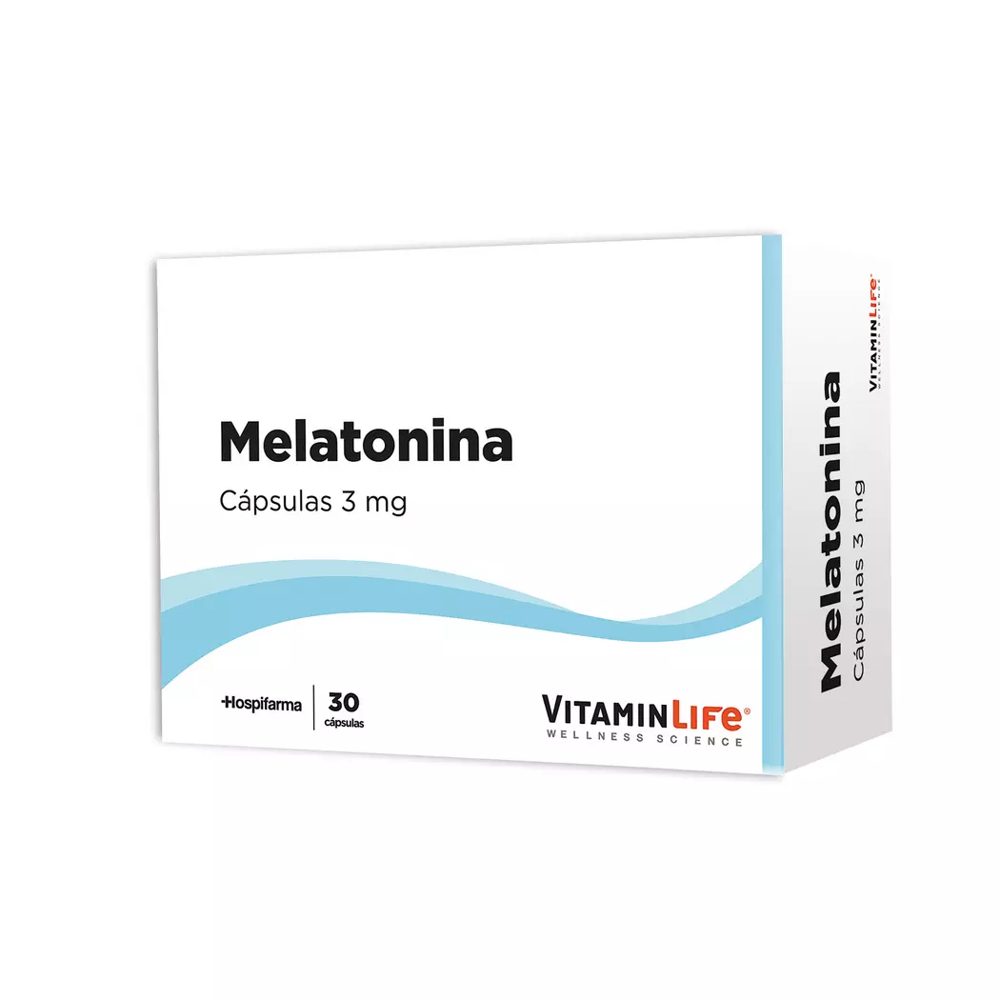
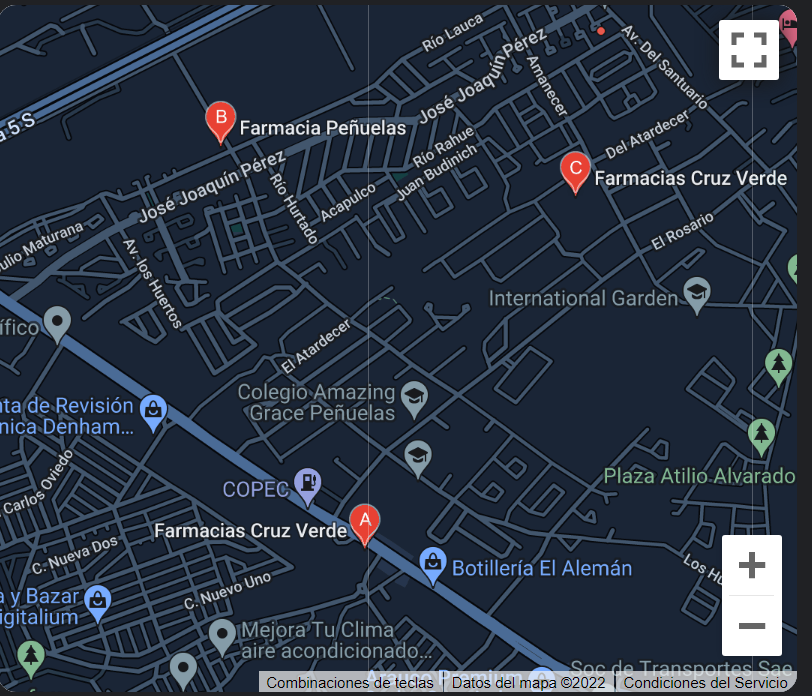

MELATONINA

DEFINICION:
La melatonina es una hormona producida por el cuerpo. Regula los ciclos de día y noche o los ciclos de sueño-vigilia. La melatonina en los suplementos generalmente se produce en un laboratorio.
La oscuridad hace que el cuerpo produzca más melatonina, lo que le indica al cuerpo que se duerma.
CANTIDAD MAXIMA:
En adultos, la dosis estándar utilizada en los estudios oscila entre 1 y 10 mg, aunque actualmente no existe una “mejor” dosis definitiva. Se cree que las dosis en el rango de los 30 mg pueden ser dañinas.
En general, es mejor empezar a disminuirla y aumentarla lenta y cuidadosamente si se ven resultados alentadores.
Requiere receta medica: NO, No requiere de una receta medica.
(TECNOMEDICAL LE RECUERDA QUE NO SE AUTOMEDIQUE Y SIEMPRE ACUDA A UN ESPECIALISTA).
EFECTOS SECUNDARIOS:
La melatonina es posiblemente segura cuando se toma a largo plazo. Se ha utilizado de forma segura hasta por 2 años.
Pero puede causar algunos efectos secundarios como dolor de cabeza,
somnolencia, mareos y náuseas. No conduzca ni utilice maquinaria durante 4-5 horas después de tomar melatonina.
DONDE PUEDO ENCONTRARLO:
Esta es la ubicacion de algunos locales en la ciudad de coquimbo con stock disponible.
